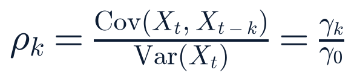

Pre-market — opens 9:30 ET, full session (no holiday, no early close)
Data freshness by source · 1 source unavailable this run (options put/call ratio — see System health).
Source
Freshness label
Data age
Index futures (Yahoo)
Delayed +10m
~15 min
Cash equities / watchlist (Yahoo, Twelve Data rate-limited)
Previous close (Mon Aug 3)
~13.5 hrs
Treasury par yield curve
EOD official (Aug 3)
~14 hrs
VIX complex (Cboe)
Previous close (Mon Aug 3)
~13.5 hrs
FX (Frankfurter / ECB reference)
EOD official (Aug 3)
~14 hrs
Crypto (CoinGecko)
Live
~5 min
FRED macro series
EOD official (obs dates vary)
1–35 days
Breadth (Massive.com grouped daily)
EOD official (Aug 3 session)
~14 hrs
FINRA short volume
EOD official (Aug 3 session)
~14 hrs
SEC EDGAR 8-K feeds
Live (UA-labeled)
<1 hr
Section 2Top Stories
New territoryConfirmed — multiple sources
SpaceX reports its first-ever public earnings today, two days before its share lockup lifts
Event 16:30 ET today (webcast) · Published this run · Last checked 06:15 ET
What happened
SpaceX (Nasdaq: SPCX) reports Q2 2026 results after today's close and hosts a live audio-only webcast at 4:30 PM ET — its first quarterly disclosure since its June 2026 IPO. It is also the trigger event for its staged lock-up: 20% of eligible insider and employee shares (up to roughly 911.5 million shares) unlock two trading days after this report, i.e. around Thursday, August 6.
Why it matters
This is a market-structure event as much as an earnings event — the first real price discovery for SPCX under public disclosure, landing just ahead of a large supply overhang from the lockup expiration.
What is confirmed
The report date/time (SpaceX investor communications, corroborated by Yahoo Finance and S&P Global previews) and Visible Alpha/Finnhub consensus: revenue estimates cluster around $6.9–7.1B, with EPS estimates spanning roughly −$1.26 to +$0.33 (Finnhub consensus −$0.26), reflecting how little the sell side has to anchor on for a first-ever print.
What remains uncertain
Actual results, and how the market will price a stock already sitting near its post-IPO low with elevated short interest (see Watchlists below) — a beat could trigger a short squeeze, a miss could compound into the lockup unlock.
Context
SPCX closed Monday +5.68% at $114.53 (52-week range $108.37–$211.39), still about 11% below its own 20-day moving average. Sell-side positioning has stayed constructive on average heading in: Morgan Stanley (Overweight, $300 PT), Cantor Fitzgerald ($246 PT), Goldman Sachs (Buy) all reiterated in recent weeks; average target near $233 across a roughly 23 Buy / 6 Hold / 2 Sell split — a wide gap versus Monday's close that this report is not resolving one way or the other.
Impact
Markets/companies: SPCX and the broader space watchlist cohort. Industries: satellite/launch peers that trade as a basket around SpaceX sentiment.
What happens next
Results and the 4:30 PM ET call; this report's Closing Brief will cover the reaction, and Thursday's lockup expiration is the next structural event to watch regardless of the print.
Related assets (exposure ≠ direction)
SPCX, RKLB, ASTS, LUNR, RDW, SPIR, FLY, VOYG
Sources: SpaceX investor communications (primary, via wire) · Finnhub earnings calendar (primary, this run) · Seeking Alpha, S&P Global, Yahoo Finance previews (secondary) · this run's own Twelve Data/Yahoo Finance and FINRA short-volume fetch (primary, data).
Expanded analysis (collapsed by default)
Monday's session added a data point this report cannot yet explain: the entire space-sector watchlist rallied hard again — VOYG +14.2%, RDW +11.8%, RKLB +8.4%, ASTS +7.7%, FLY +7.7%, SPIR +7.2%, LUNR +6.2% — a materially larger move than the broad market's own strong day (S&P +1.48%). This report has not identified a single confirmed catalyst for the group move; it is noted here as coinciding with earnings anticipation, per SR §5 causality language, not asserted as caused by it.
SPCX's own FINRA short-volume ratio for Monday's session was 75.4% of total volume — the highest in the entire 167-symbol watchlist and up from 71.8% Friday — alongside a price still near its 52-week low. That combination (heavy short positioning, depressed price, a binary near-term catalyst, and an imminent supply unlock) is the classic setup for a large move in either direction; this report is not forecasting the direction, only flagging the structural volatility (see Risks & Scenarios and the logged forecast below).
Iran hardens its denial that any US deal exists; Trump calls this Iran's "last chance"
Event ongoing (weekend–Monday) · Published Aug 2–3 · Last checked 06:10 ET
What happened
Iranian Foreign Ministry spokesperson Esmaeil Baghaei again said explicitly that no direct US-Iran negotiations are underway — only Iran-Oman talks — while President Trump wrote on Truth Social that Iranian leadership is "unbelievably duplicitous" for allegedly seeking meetings and then denying them, and separately called this Iran's "last chance" to reach a deal at the table.
Why it matters
Both governments can technically be correct at once: Iran can deny direct talks while allowing messages to move through Oman, Qatar, and Pakistan, and Washington can call that "negotiation." The gap between the market's de-escalation-linked pricing and Iran's on-record denial has now widened for a third straight day without resolving.
What is confirmed
Both governments' public statements (primary, via wire); no US-Iran meeting has been confirmed by either side.
What remains uncertain
Whether any indirect channel is producing real progress, or whether both sides are managing domestic narratives around a stalemate.
Context
This is the fourth consecutive report tracking this exact dynamic (first surfaced Jul 30); equities have not reversed the weekend's de-escalation-linked rally despite the harder denial — the S&P is up 1.48% and Nasdaq up 2.13% since Friday's close even as the denial hardened.
Impact
Markets: oil, defense names, broader risk sentiment. Policy/security: the pause in planned strikes on Iranian energy infrastructure remains the operative (if disputed) status quo.
What happens next
Watch for any confirmed Oman-channel readout or a fresh Trump ultimatum with a deadline attached.
Related assets (exposure ≠ direction)
CL=F, XLE, defense_aero basket
Sources: Iranian FM spokesperson statements via RFE/RL, Rappler (secondary, quoting primary statements) · Trump Truth Social posts via CNN, Washington Post · The National (analysis, labeled).
Expanded analysis (collapsed by default)
The market's continued extension of gains through this denial cycle is itself informative: either investors are discounting the rhetoric as theater around an indirect track that is genuinely progressing, or the rally's real drivers (Monday's hot ISM print, a broad-based mega-cap and space-sector melt-up, falling oil) have simply become large enough to swamp the Iran headline risk for now. This report is not asserting which; both are plausible and neither is confirmed.
NewConfirmed — multiple sources
A third Strait of Hormuz-area vessel is hit within a week, as this report's own forecast anticipated
Event Aug 1 (reported) · Published Aug 1–2 · Last checked 06:10 ET
What happened
An LNG tanker carrying a Qatari shipment (initially reported unnamed, subsequently reported as the Velos Amber) was struck by a projectile about 20 nautical miles northeast of Al Khasab, Oman, on the southern side of the Strait of Hormuz on August 1. No group has claimed responsibility.
Why it matters
This is the third distinct vessel incident in the Strait of Hormuz corridor within roughly five days (after the Gaslog Salem, struck at Egypt's Damietta port, and the Gaslog Shanghai, struck transiting outbound Jul 31–Aug 1) — an accelerating pace within a broader campaign that, per Wikipedia's tracking synthesis of wire reporting, has now damaged at least 17 merchant ships since it began February 28, 2026.
What is confirmed
The strike itself and its rough location (Bloomberg, primary-adjacent wire reporting); the vessel identity varies slightly across early outlets and should be treated as still settling.
What remains uncertain
Attribution — no claim of responsibility for any of the three incidents.
Context
This resolves this report's own Sunday forecast (2026-08-02-sun-3, a third Hormuz-area incident this week) toward correct; formal Saturday grading pending. The Strait carries roughly a fifth of global LNG shipments.
Impact
Energy: shipping risk premia, LNG/oil tanker insurance. Markets: oil's Monday move (+1.4%/−5.1% depending on window — see Premarket Setup) sits directly downstream of this risk channel.
What happens next
This report is logging a fresh forecast on whether a fourth incident lands within the next 7 days (see Risks & Scenarios).
Related assets (exposure ≠ direction)
CL=F, NG=F, XLE
Sources: Bloomberg · Wikipedia "2026 Strait of Hormuz crisis" (tertiary synthesis of wire reporting, used for the cumulative damaged-vessel count only) · CNN.
DRC's Ebola outbreak becomes the largest ever recorded in the country
Event ongoing · Published Jul 30–Aug 3 · Last checked 06:05 ET
What happened
WHO confirms the current outbreak has now surpassed the 2018–2020 Kivu outbreak (3,317 confirmed cases) as the largest Ebola outbreak ever recorded in the Democratic Republic of the Congo. The most recent complete reporting week (epidemiological week 30) recorded the highest weekly case count (567) and death count (296) of the entire outbreak.
Why it matters
The growth rate is accelerating, not plateauing — WHO's own language calls it "intensifying, with sustained transmission and continued increases in reported cases and deaths."
What is confirmed
3,605 confirmed cases and 1,587 deaths as of July 30 (a 44% case-fatality rate) — WHO Disease Outbreak News (primary).
What remains uncertain
Whether the upcoming IHR Emergency Committee meeting (scheduled Aug 18) results in an escalated international response designation; a new UN-run treatment center opened at the outbreak's Ituri epicenter this week, reported single-source (UN News) and not yet independently corroborated by this report.
Context
By contrast, Uganda formally closed its own linked outbreak chapter July 28 after 12 days with no new case following its last discharge — the crisis is now concentrated entirely within DRC, spanning five provinces.
Impact
Public health: regional and potential international response scale. No direct market linkage identified.
What happens next
The Aug 18 IHR Emergency Committee meeting is the next scheduled decision point.
Related assets (exposure ≠ direction)
—
Sources: WHO Disease Outbreak News DON613/DON614 (primary) · UN News (primary, single-source on the treatment center) · ECDC, Medical Xpress, Wikipedia (secondary synthesis).
NewConfirmed — multiple sources
Spokane-area wildfires destroy 700+ structures and force 65,000 evacuations; arson arrest made
Event Aug 1–3 · Published Aug 1–3 · Last checked 06:05 ET
What happened
Three fast-moving wildfires collectively called the Spokane Complex Fire broke out Saturday, Aug 1, in Spokane County, Washington, driven by 35–45 mph winds that pushed flame fronts into Riverside State Park and across the Spokane River and into parts of the city itself.
Why it matters
This is one of the more destructive single wildfire events of the US 2026 season by structure count, with a large, fast evacuation under active investigation as arson.
What is confirmed
Roughly 700 homes and other structures burned; approximately 65,000 people evacuated; the fires had burned about 8,026 acres and were 0% contained as of the most recent reporting; a man has been charged with arson in connection with one of the three fires. No deaths reported as of Monday midday.
What remains uncertain
Final structure-loss and containment figures, which are still moving.
Context
Cooler temperatures and more favorable weather were expected to help crews make gains after Monday, per Washington State Standard reporting.
Impact
Public safety/insurance: regional. No direct national market linkage identified.
What happens next
Containment progress and a final damage assessment.
Related assets (exposure ≠ direction)
—
Sources: Washington State Standard · CNN live coverage · NBC News · Washington State DSHS emergency updates (primary, state agency).
Ceuta migrant-crossing crisis escalates: Italy closes air and sea borders with Spain
Event ongoing since Aug 1–2 · Published Aug 2–3 · Last checked 06:00 ET
What happened
Following a mass crossing of an estimated 60,000 migrants into Spain's Ceuta enclave from Morocco (most have since returned voluntarily), Italy escalated beyond its initial one-month Schengen-free-travel suspension with Spain: its Interior Ministry has now ordered the closure of air and sea borders with Spain, and Italy separately agreed with France to strengthen controls along their own shared land border.
Why it matters
This is an unusually sharp unilateral EU internal-border response to a migration event, and it is now spreading to a third country's border posture (France-Italy) beyond the original Spain-Italy dispute.
What is confirmed
The scale of the crossing, Italy's air/sea border closure with Spain, and the France-Italy land-border agreement (Newsweek, Euronews, multiple outlets).
What remains uncertain
The death toll remains unreconciled across outlets: Euronews now cites at least 88, versus 72 (Al Jazeera, Fox News) and 67 (NPR) in earlier cycles — no single authoritative count has emerged.
Context
EU rules do not actually provide a mechanism for one member state to formally suspend another from the Schengen zone; Italy's steps function as a unilateral reintroduction of border controls, which the Schengen framework does permit under exceptional circumstances. Spanish PM Pedro Sánchez has pushed back, calling the response "selfish" and saying "respect for European treaties...is not optional."
Impact
Policy: EU internal-border cohesion. No direct market linkage identified.
What happens next
The EU is preparing broader talks on the crisis; watch for whether other member states follow Italy's posture.
Related assets (exposure ≠ direction)
—
Sources: Euronews · Al Jazeera · Newsweek · CNN · Fox News · NPR.
Materially changedConfirmed — multiple sources
Blanche's Attorney General nomination goes to a Senate Judiciary Committee vote this morning
Event scheduled 9:00 AM ET today · Published Aug 2–3 · Last checked 06:00 ET
What happened
Both Republican holdouts on the committee — Sens. Cornyn and Tillis — are now on record supporting advancement, after acting AG Todd Blanche formally rescinded the disputed $1.8 billion "anti-weaponization fund" that had stalled the nomination since late July.
Why it matters
A committee vote to advance sends the nomination to the full Senate for final confirmation, closing out a multi-week procedural standoff this report has tracked since Jul 30.
What is confirmed
The rescission of the fund and both senators' on-record support (NBC News, CNBC, joint Cornyn/Tillis statements); the 9:00 AM ET committee vote is on the calendar (this run's own calendar-cache sweep, Confirmed-multiple).
What remains uncertain
The vote itself has not yet occurred as of this report's news cutoff (this is a Morning Brief published before the 9:00 AM vote) — this report is not asserting an outcome, only that both prior blockers have withdrawn their objections.
Context
CNN has reported some critics flagging "loopholes" in Blanche's concessions; attributed, not adopted as this report's own assessment.
Impact
Policy/legal: DOJ leadership continuity.
What happens next
This morning's committee vote, then a full Senate floor vote if advanced. Logged as a forecast below.
Gaza's Board of Peace says no Israeli withdrawal until Hamas fully disarms, hardening the roadmap's terms
Event Aug 4 · Published Aug 4 · Last checked 05:55 ET
What happened
The Board of Peace stated explicitly that Israel's withdrawal from Gaza will not begin before Hamas has completely disarmed — a sequencing clarification of the 15-point roadmap this report has tracked since Jul 30–31.
Why it matters
This tightens the roadmap's terms in the direction Israel had been pushing for (its formal reservations, filed Monday, objected to the document partly on sequencing grounds), while Hamas has separately said it will not implement any part of the deal unless Israeli forces fulfill their own withdrawal obligations — the two sides' preconditions for action remain in direct tension.
What is confirmed
The Board of Peace's stated position (Al Jazeera, citing Board officials) and Israel's prior formal reservations (this report's Aug 3 tracking).
What remains uncertain
Whether either side treats this clarification as movement toward agreement or as further hardening; neither Hamas nor the Israeli government has issued a fresh on-record response to this specific sequencing statement as of this report's cutoff.
Context
Gaza Health Ministry figures (not independently verified by this report) put Sunday's toll at 18–19 killed, the highest single-day figure in several weeks, with a July total of 152 killed.
Impact
Geopolitics/policy: regional stabilization-force planning tied to the roadmap's ~Aug 13 target date, which looks increasingly unlikely to hold.
What happens next
Watch for Hamas's and Israel's formal responses to this sequencing statement.
Related assets (exposure ≠ direction)
—
Sources: Al Jazeera (primary reporting on Board of Peace statements) · Times of Israel · The Hill · NBC News (casualty reporting).
NewConfirmed — multiple sources
Indonesian passenger ferry fire leaves at least 5 dead and 41 missing
Event Aug 2 (early morning local) · Published Aug 2–3 · Last checked 05:55 ET
What happened
The ferry Mutiara Sentosa 2, traveling from Surabaya (East Java) to Makassar (South Sulawesi) with 271 people aboard (232 passengers, 39 crew), caught fire between roughly 6–7 AM local time near Madura Island. A survivor account attributes the fire's apparent origin to a truck on the vehicle deck; the cause remains under investigation.
Why it matters
A significant maritime mass-casualty event with a large unresolved missing count.
What is confirmed
225 passengers and crew rescued by nearby vessels; five bodies recovered; 41 people unaccounted for as of the most recent reporting (Washington Post, Al Jazeera, NPR).
What remains uncertain
The fire's cause and the final casualty count as search efforts continue.
Context
—
Impact
Public safety. No direct market linkage identified.
What happens next
Ongoing search-and-rescue and the official cause investigation.
Related assets (exposure ≠ direction)
—
Sources: The Washington Post · Al Jazeera · NPR · The National.
Water-utility cyberattacks spread to a seventh state; FBI still has not attributed them to Iran
Event ongoing since late Jul · Published Aug 1–3 · Last checked 05:50 ET
What happened
Malicious cyber activity has now affected water-system technology in at least seven states this past week, including newly-confirmed intrusions in Georgia (per The Register) alongside the previously reported Minnesota and Michigan incidents.
Why it matters
The geographic spread is widening even as attribution stays unresolved — a pattern that, per federal officials, resembles a 2023 playbook attributed to actors affiliated with Iran's IRGC that exploited internet-connected controllers left on default passwords.
What is confirmed
More than 30 Minnesota water systems were affected, mostly via remote-monitoring/control technology (programmable logic controllers); nine Michigan systems were affected with all continuing to operate safely and no known public-health impact; a Braham, MN city official described a well pump failing to respond to a water-tower demand signal. The FBI has confirmed it is investigating but has explicitly not assigned responsibility.
What remains uncertain
Iran attribution remains Preliminary/Unverified per the FBI's own public framing; sources caution the assessment could change as more technical evidence is gathered.
Context
Direct CISA.gov access was again blocked (HTTP 403) this run, limiting this report's ability to independently check for a related advisory update; CISA separately added one new Known Exploited Vulnerability (CVE-2026-18577, an N-able N-central authentication-bypass flaw) to its KEV catalog Aug 3, unrelated to the water-utility intrusions as far as this report can determine.
Impact
Critical infrastructure/security policy.
What happens next
Further FBI/CISA guidance and whether additional states report intrusions.
Related assets (exposure ≠ direction)
—
Sources: CBS News · The Register · Fortune · ABC News/ABC7 · Fox News.
ContinuingConfirmed — multiple sources
Russia-Ukraine war continues at an active tempo; rare drone strike reaches inside Russia's Moscow region
Event overnight Aug 2–4 · Published Aug 3–4 · Last checked 05:50 ET
What happened
Ukraine's General Staff reported 182 combat clashes and 58 Russian air strikes on Aug 3; overnight into Aug 4, Russian strikes killed three people in a residential complex in Ukraine's Sumy region, while Ukrainian air defenses intercepted 117 of 136 Russian drones. Separately, a Ukrainian drone attack on an industrial area in Chekhov, in Russia's Moscow region, injured 10 — a comparatively rare strike that far inside Russia.
Why it matters
Continues the high-tempo pattern this report has tracked since the Poland missile-incursion episode (NATO's informal 72-hour Article 4 window passed without invocation on Aug 2, resolving that forecast toward correct; formal grading Saturday).
What is confirmed
Ukraine's own General Staff reporting and Russian regional-governor statements (both primary, via wire); Ukraine's Unmanned Systems Forces also reported striking a Russian fuel-tanker column near occupied Prymorsk, Zaporizhzhia.
What remains uncertain
Independent casualty verification beyond the respective governments' own statements.
Context
—
Impact
Geopolitics/security; no direct US market linkage identified this cycle.
What happens next
Ongoing; no scheduled diplomatic milestone identified this run.
Related assets (exposure ≠ direction)
—
Sources: Ukraine General Staff (primary, via wire) · GlobalSecurity.org · Moscow-region governor statements (primary, via wire).
Section 3 · the two-minute versionTwo-Minute Executive Brief
The world Iran's denial of any US deal has hardened for a third day without derailing markets; a third Strait of Hormuz-area vessel was hit, materializing a risk this report flagged Sunday. Two large disaster stories broke over the weekend — Spokane's 700-structure wildfire complex and an Indonesian ferry fire with 41 still missing — alongside a genuinely record-setting DRC Ebola outbreak and an escalating EU border dispute over Spain's Ceuta migrant crisis.
Markets Monday was a broad, strong risk-on session (S&P +1.48%, Nasdaq +2.13%, Dow to a fresh high, Russell +1.78%) on a hot ISM print and falling oil, with space-sector names (+5.9% average) and mega-cap tech leading; overnight futures are essentially flat versus Monday's own close — a quiet setup ahead of today's JOLTS release, the Blanche committee vote, and this evening's SpaceX earnings.
Central theme Markets keep extending gains through unresolved geopolitical risk (Iran denial, a third Hormuz strike) rather than pricing it — a gap this report is monitoring, not explaining away.
Most important new development SpaceX's first-ever public earnings tonight, arriving two days ahead of its share-lockup expiration, against a backdrop of a 75%-short-volume, 52-week-low stock.
Most important risk A fourth Hormuz-area incident or a hard Iran deadline within days, given the accelerating pace of attacks (three in roughly five days).
Most important positive development Both Republican holdouts on Blanche's AG nomination are now on record in support, clearing the way for today's committee vote.
Key unknown Whether SpaceX's first print resolves or widens the roughly 100%-plus gap between its Monday close and the sell side's average price target.
Deserves attention today
Senate Judiciary Committee vote on Blanche, 9:00 AM ET.
JOLTS (June), 10:00 AM ET — the last labor read before Friday's jobs report.
SpaceX Q2 earnings and webcast, after close / 4:30 PM ET.
Section 4Since Yesterday’s Close
Material updateStrait of Hormuz
Two tracked tankers (Gaslog Salem, Gaslog Shanghai) → a third distinct vessel (Velos Amber) struck Aug 1 → the accelerating pace (3 incidents in ~5 days) is now the more decision-relevant fact than any single strike. Current confidence: high on the pattern, none on attribution.
Material updateDRC Ebola outbreak
Fastest-growing outbreak on record → now confirmed as the largest ever recorded in DRC, with the single worst reporting week of the entire outbreak → raises the stakes of the Aug 18 IHR Emergency Committee meeting. Current confidence: high (WHO primary data).
New since closeCeuta/Schengen dispute
Italy's initial one-month Schengen-travel suspension with Spain → escalated to full air/sea border closure plus a new France-Italy land-border tightening → a bilateral migration dispute is becoming a multilateral EU border-control story. Current confidence: high on the policy moves, low on the death toll (still disputed 67–88).
FadedKumamoto earthquake
Toll held at 38 for a second consecutive day; no new deaths reported. Dropped from Top Stories this cycle (re-reported ≠ new), retained on the watchlist — the water/heat crisis for survivors remains the live risk, not the death count.
FadedNDAA FY2027
No procedural movement; Senate Democrats continue blocking floor consideration over Iran-war spending objections following the House's passage of its own version. Dropped from Top Stories, retained on watch.
FadedShinyHunters/EY extortion claim
No leak-site posting or EY statement found since the passed July 31 deadline; EY has still not publicly verified the claim. No material change.
Section 5Overnight World Developments
The clearest through-line overnight is accelerating, disparate crisis activity rather than any single dominant story: a third Hormuz-area tanker strike, Italy's border escalation with Spain over Ceuta, a confirmed-record DRC Ebola outbreak, and continuing high-tempo Russia-Ukraine strikes (Sumy killed 3; a rare Ukrainian drone strike reached Chekhov in Russia's Moscow region, injuring 10). In the Middle East beyond Gaza and Iran, Israeli Army Radio reported an internal disagreement between the Defense Minister and Central Command over expanding West Bank operations, with Central Command reportedly seeing no current operational need to seize another refugee camp; separately, Israeli settlers reportedly set fire to homes and vehicles south of Nablus as raids continued across the West Bank (Confirmed-multiple on the incident reports; this report has not independently verified casualty or damage specifics).
Section 6US Politics & Government
The Senate Judiciary Committee is scheduled to vote on Todd Blanche's Attorney General nomination at 9:00 AM ET today, with both Republican holdouts (Cornyn, Tillis) now on record in support after Blanche rescinded the disputed $1.8B "anti-weaponization fund" Sunday night. A committee advance would send the nomination to a full Senate floor vote (System inference: no floor-vote date has been confirmed by this report).
The FY2027 NDAA remains stalled on the Senate floor: the House passed its own version last week ($1.15T base authorization, versus the Pentagon's stated $1.5T total ask including a $350B reconciliation component), but Senate Democrats continue blocking floor consideration, reportedly over objections to Iran-war-related spending and the overall growth in defense outlays. No new procedural movement since the July 14 cloture failure.
At the Supreme Court, the Trump administration's push to implement its mail-in-ballot restriction executive order nationwide remains pending; Justice Jackson's Aug 3 deadline for the 23-state-plus-D.C. coalition's response has passed (this report could not independently verify the filing's contents against the primary docket), and federal appeals courts have issued conflicting rulings on the underlying order. Reporting broadly agrees the restrictions will not be implemented in time for the 2026 midterms regardless of how the Court rules, given the logistics involved — that framing is attributed to reporting, not adopted as this report's own legal conclusion.
Section 7Geopolitics
Iran: see Top Stories for the denial dynamic. Gaza: see Top Stories for today's Board of Peace sequencing statement. Russia-Ukraine: see Top Stories and Overnight World Developments above for the latest strike activity; NATO's informal Article 4 window on the Poland missile incursion passed Aug 2 without invocation.
West Bank tensions (see Overnight World Developments) sit alongside the broader Gaza disarmament dispute as a second friction point this report is tracking at lower confidence given the single-network sourcing (Israeli Army Radio) on the internal Israeli policy disagreement.
Section 8Economics & Central Banks
JOLTS — Job Openings and Labor Turnover Survey (June 2026) Due 10:00 AM ET today
Why it matters
An earlier, noisier read on labor demand ahead of Friday's July jobs report — the week's only Critical-tier economic release. Not yet published as of this report's cutoff.
Labor-market context (FRED, most recent available observations) EOD official, obs dates vary
Nonfarm payrolls
158.984M (Jun 2026 obs) vs 158.927M (May) — roughly +57k m/m, source: FRED PAYEMS
Unemployment rate
4.2% (Jun) vs 4.3% (May) — source: FRED UNRATE
Initial jobless claims
197,000 (week of Jul 25) vs 188,000 (Jul 18) — source: FRED ICSA
Read
A modestly cooling but still-positive labor picture heading into Friday's print; this report is not forecasting Friday's number from these inputs alone.
Inflation & rates context (FRED) EOD official
CPI (SA index level)
332.568 (Jun obs) vs 333.979 (May) — source: FRED CPIAUCSL; this report does not have a 12-month-prior observation in this run's fetch window and is not asserting a year-over-year figure from it.
Core CPI (SA index level)
336.065 (Jun) vs 336.121 (May) — source: FRED CPILFESL
High-yield OAS
2.84% (Jul 30 obs, appended to state/market-history/hy-oas.csv in a prior run) — still near cycle-tight levels
SOFR
3.66% (Jul 31 obs)
Today's Treasury bill auctions (52-Week, $52B; 6-Week, $95B) are routine supply, not typically market-moving on their own; the 3-Year, 10-Year, and 30-Year note/bond auctions land next week (Aug 11–13). No FOMC meeting until September; Fed governors Bowman and Cook have upcoming public appearances on the Board's August calendar, though this report could not confirm specific dates/times/topics for this week from the fetched calendar sources.
Section 9Business & Corporate
Four watchlist companies filed 8-Ks Monday afternoon around Monday's earnings releases: BWX Technologies, Danaher, Vertex Pharmaceuticals, and Palantir (SEC EDGAR, primary, this run — filing links in Sources below). This report's news-research pass did not locate independent wire coverage of each company's specific results before this morning's cutoff; treat the filings' existence as Confirmed-primary and any specific figures as pending independent verification in a future edition.
Today is a broad earnings day across the watchlist: SpaceX (amc, see Top Stories), AMD (amc), Arista Networks (amc), Apollo Global (bmo), Booking Holdings (amc), Kratos (amc), McDonald's (bmo), Merck (bmo), Pfizer (bmo), and Viasat (amc) all report. Consensus estimates (Finnhub, this run): AMD EPS $1.63 on ~$11.4B revenue; ANET EPS $0.90 on ~$2.87B; APO EPS $2.20 on ~$5.75B; BKNG EPS $2.49 on ~$7.34B; MCD EPS $3.35 on ~$7.2B; MRK EPS −$0.27 (GAAP, likely reflecting a one-time item) on ~$16.5B; PFE EPS $0.69 on ~$14.5B; VSAT EPS −$0.31 on ~$1.22B.
Monday's cash session itself was a broad, strong rally: mega-cap tech led with META +6.02%, GOOGL +4.88%, AMZN +4.58%, MSFT +4.93%, TSLA +3.49%, NVDA +2.93%, while AAPL lagged (−1.78%), still working off its post-earnings guidance selloff from last week. See Watchlists in the Market Intelligence Appendix for the full sector and group breakdown.
Section 10Tech, AI & Cybersecurity
OpenAI, Anthropic, and Google are expected to join a White House AI safety meeting on a new voluntary safety-testing framework this week, stemming from President Trump's June executive order on AI cybersecurity; this report could not independently pin down the exact meeting date from its sources this run (one wire report's stated weekday did not match the given calendar date) and is not asserting one. The meeting follows the recent wave of first-party AI safety-failure disclosures from Anthropic and OpenAI/Hugging Face (tracked in prior editions), which has drawn lawmaker concern about whether increasingly capable models could facilitate cyberattacks — directly adjacent to this run's water-utility cyberattack story above.
Cybersecurity: see Top Stories for the water-utility intrusions. CISA added CVE-2026-18577 (an N-able N-central authentication-bypass flaw) to its Known Exploited Vulnerabilities catalog Aug 3; direct CISA.gov advisory access remains blocked (HTTP 403) for this report's automated fetches, a recurring limitation flagged in prior editions. No new development found on the ShinyHunters/EY extortion claim past its passed July 31 deadline.
Section 11Science & Engineering
No standalone science or engineering story cleared this report's selection bar this cycle beyond the disaster and public-health items already covered under Top Stories and Overnight World Developments (DRC Ebola, Spokane wildfires). See today's Physics and Quant/ML lessons below for the recurring learning-track content.
Section 12Space & Spaceflight
SpaceX's first-ever public earnings dominate today's space-sector calendar — see Top Stories for full detail. Launch activity: a Long March 8A carrying an undisclosed payload lifted off from Wenchang this morning (05:50 ET; Launch Library 2, Confirmed-primary, routine Chinese launch, already in flight as of this report's cutoff); a Falcon 9 carrying the Starlink Group 17-53 mission is scheduled from Vandenberg at 10:00 AM ET today, a routine Starlink deployment. No other watchlist-relevant launch or mission-status news identified this run.
Section 13Today’s Calendar
All times ET. Importance per SPEC §17, with reason in the row.
Time ET
Event
Importance
Notes
04:50
Long March 8A — undisclosed payload (Wenchang)
Low
Routine; already launched
09:00
Senate Judiciary Committee vote on Blanche AG nomination
As of ~05:50 ET, vs Monday afternoon's own settle/close levels (not the buggy chartPreviousClose field — see methodology note, Section 20) · futures/commodities Delayed +10m, FX best-effort, crypto Live.
Instrument
Level
vs Monday settle
Label
ES (S&P futures)
7,634.75
0.00%
Delayed +10m
NQ (Nasdaq futures)
29,046.00
+0.40%
Delayed +10m
YM (Dow futures)
53,393.00
+0.08%
Delayed +10m
RTY (Russell futures)
2,987.50
−0.19%
Delayed +10m
US 10Y yield (Treasury par curve)
4.70%
unchanged (curve not yet republished)
EOD official (Aug 3)
EUR/USD
1.1511
−0.03%
Delayed
VIX (prior close)
15.86
−0.13 vs Fri
Previous close
WTI crude
$82.17
+2.30%
Delayed +10m
Gold
$4,105.60
−0.14%
Delayed +10m
Bitcoin
$63,481
+1.43% (24h)
Live
Futures are essentially flat versus Monday afternoon's own close — ES is printing the identical level it closed at Monday, and NQ/YM/RTY show only small moves. That is a genuinely quiet overnight tape, not a data gap: the earlier Aug 3 correction (see Section 20) fixed a bug where this table compared against a stale two-sessions-back close; this run compares directly against Monday's own settle. WTI's +2.3% bounce is the one real overnight mover, a partial retracement of Monday's own −5.1% slide and directly downstream of the fresh Hormuz incident risk (see Top Stories). What markets appear to be pricing: a continuation of Monday's broad risk-on move, with no fresh premarket catalyst of its own. The fragile assumption is that Monday's rally (attributed to a hot ISM print and falling oil, not confirmed to any single cause) persists through today's real catalysts — JOLTS, the Blanche vote, and SpaceX's first earnings tonight. Any of the three, or a fresh Hormuz/Iran headline, could invalidate it. Breadth context from Monday's close: 3,821 advancers vs 1,450 decliners of 5,541 screened — a strongly positive internals day (see Market Intelligence Appendix).
Section 15 · probability ranges, never fake precisionRisks & Scenarios
SpaceX's first public earnings print produces an outsized move
Preconditions: a first-ever quarterly disclosure for a stock already near its 52-week low with 75.4% short volume and a ~100%+ gap to the average sell-side price target. Probability: 55–65% the stock closes more than ±10% away from tonight's pre-earnings level by Wednesday's close (basis: elevated short interest plus a binary catalyst plus an imminent lockup, logged as forecast 2026-08-04-am-1). Indicators: after-hours reaction to the print, short-volume ratio Wednesday, options volume. Consequences if realized: could set the tone for the broader space-sector cohort into Thursday's lockup expiration. Invalidators: an in-line, low-drama print with no big surprise on either revenue or Starship/Starlink commentary.
A fourth Strait of Hormuz-area incident within the week
Preconditions: the pace has been three incidents in roughly five days. Probability: 40–55% by Aug 11 (basis: recent incident cadence within the broader Feb 28-onward campaign; logged as forecast 2026-08-04-am-3). Indicators: UKMTO advisories, tanker insurance/shipping-rate moves. Consequences if realized: further oil-price volatility and shipping-risk premium. Invalidators: a confirmed Oman-channel diplomatic breakthrough.
DRC Ebola outbreak triggers an escalated international response
Preconditions: record-setting weekly case/death counts heading into the Aug 18 IHR Emergency Committee meeting. Probability: not quantified this run (horizon exceeds this report's typical forecasting window; will revisit closer to Aug 18). Indicators: WHO's pre-meeting Rapid Risk Assessment, any travel-advisory changes. Consequences if realized: broader international resource mobilization. Invalidators: a genuine plateau in weekly case growth before the meeting.
Section 16 · learningPhysics Lesson
Physics 7/71 · Coordinate systems
A coordinate system is just an agreed-upon way to say "where" — an origin (a zero point), a set of axes pointing in fixed directions, and units of measurement. Without one, "the ball is over there" isn't physics; "the ball is at (3m, 4m) from the corner of the room" is. Cartesian coordinates (x, y, z at right angles) are the default, but polar and spherical coordinates describe the same points using a distance and one or two angles instead — often far more naturally for problems with rotational symmetry, like orbits or pendulums.
This builds directly on the vector language this track has been assembling: a vector's components are only meaningful once you've fixed a coordinate system to measure them against, and the freedom to choose a convenient one — origin at the launch point, x-axis along the direction of travel — is often what turns an intractable problem into an easy one. The choice of coordinate system never changes the physics; it only changes how much arithmetic you have to do to describe it.
Section 17 · learningSpaceflight Lesson
Spaceflight 7/75 · The Tsiolkovsky rocket equation
The rocket equation, Δv = Isp·g₀·ln(m₀/mf), answers the single most important question in spaceflight: how much velocity change can a rocket actually deliver? It says that Δv depends on only two things — how efficiently the engine converts propellant into exhaust velocity (specific impulse, Isp), and the ratio of the rocket's starting mass (fuel included) to its final mass (fuel spent). The natural log means each additional unit of Δv costs exponentially more propellant, not linearly more — the single biggest reason multi-stage rockets exist at all: dropping dead mass (empty tanks, spent engines) partway up resets that ratio in the rocket's favor.
It builds directly on Newton's third law and momentum conservation covered earlier in this track: a rocket accelerates by throwing mass backward, and the rocket equation is simply that momentum-conservation argument integrated over the whole burn, as the rocket's mass continuously decreases. Every design conversation SpaceX or any launch provider has about staging, fuel choice, or structural mass is, underneath, an argument about this one equation.
Section 18 · learningQuant/ML Lesson
Quant/ML 7/118 · Autocorrelation Function (ACF)
The autocorrelation function asks a simple question about a time series: how correlated is today's value with the value k periods ago? Formally, ρk = Cov(Xt, Xt−k) / Var(Xt) = γk/γ₀ — the covariance between the series and its own lagged self, normalized by the series' own variance so the result always falls between −1 and +1, just like an ordinary correlation coefficient.

Equation 7 of 118 — embedded from site/equations/ (registry order).
A high ACF at short lags means a series has momentum or persistence (today looks like yesterday); an ACF near zero at all lags is closer to noise; a strongly negative ACF at lag 1 suggests mean-reverting, bouncy behavior. A common misconception: a nonzero ACF is not by itself evidence of predictability you can trade — transaction costs, and the fact that other market participants can see the same pattern, both eat into any edge implied by raw autocorrelation. The registry entry itself flags that this is the standard textbook form rather than a source-verified equation — noted here for transparency, not corrected, since it matches the conventional definition.
Section 19 · collapsed by defaultFull Market Intelligence Appendix
Open the full market & economic analysisMarket regime
Risk-on, broad-based Supporting evidence: 3,821 advancers vs 1,450 decliners (of 5,541 screened) on Monday, all four major indices up together, up-volume more than double down-volume ($10.6B vs $4.0B shares), 10 of 11 sectors green, HY OAS pinned near cycle-tight levels (2.84%), VIX falling even as equities rallied. Contradicting evidence: healthcare/staples/energy sectors negative, TLT/rates funds soft (mild bond-market caution), and the rally is extending through unresolved Iran/Hormuz risk without visibly pricing it — a gap, not a confirmation the regime is durable. Confidence: medium-high. No material change vs Monday's own assessment.
Broad equities
Previous close, 2026-08-03 · EOD official.
Fund
Close
Day
vs 20-DMA
vs 50-DMA
vs 200-DMA
SPY
757.67
+1.42%
+1.61%
+1.70%
+8.18%
QQQ
700.07
+1.76%
−0.14%
−2.10%
+8.53%
IWM
296.22
+1.72%
+0.76%
+1.28%
+11.42%
DIA
531.22
+1.32%
+1.60%
+2.74%
+8.28%
VTI
373.84
+1.53%
—
—
—
RSP (equal-weight)
217.11
+0.98%
—
—
—
SPY closed within 0.25% of its 52-week high ($759.57); QQQ is the one broad fund below both its 20- and 50-DMA, still digesting last week's mixed mega-cap earnings reactions. RSP's smaller gain than SPY (equal-weight lagging cap-weight) signals Monday's rally concentrated in large names, not a uniformly broad advance despite the strong 3,821:1,450 breadth ratio.
Breadth
Aug 3 session: 3,821 advancers, 1,450 decliners, 270 unchanged of 5,541 screened (Massive.com grouped-daily, filtered for symbol length ≤5, no "." in symbol, close ≥$1, volume ≥100,000). Up-volume $10.61B shares vs down-volume $4.02B shares. This is the 7th session in the accumulating EMA-proxy history; 50-/200-session thresholds for %-above-50DMA/200DMA are not yet reached (Estimated — EMA proxy, accumulating history, 7/200 sessions), so those breadth percentages are not yet reportable. Cumulative advance-decline line across the 7-session history remains positive.
Sectors
SPDR sector ETFs, previous close 2026-08-03 · EOD official.
Sector
Day
XLC (Communication Svcs)
+2.86%
XLI (Industrials)
+1.85%
XLY (Consumer Discretionary)
+1.83%
XLK (Technology)
+1.53%
XLB (Materials)
+1.15%
XLF (Financials)
+0.77%
XLRE (Real Estate)
+0.24%
XLU (Utilities)
+0.02%
XLV (Health Care)
−0.19%
XLP (Consumer Staples)
−0.22%
XLE (Energy)
−1.28%
Communication Services led on the mega-cap (META, GOOGL) strength; Energy was the sole meaningful laggard as oil fell Monday before this morning's partial bounce.
Industries (watchlist group averages)
Simple average of Monday's % change across each watchlist group.
Group
Avg. day
Best
Worst
Space
+5.87%
VOYG +14.19%
YSS −3.05%
Defense/Aerospace
+3.21%
RKLB +8.44%
GD −0.26%
AI Infrastructure
+2.78%
VRT +8.89%
TSM +0.46%
Financials
+1.65%
ARES +8.18%
CBOE −4.00%
Consumer
+1.48%
UAL +5.82%
MCD −2.00%
International equity ETFs
+0.71%
VNM +3.06%
EWZ −0.63%
Health Care
−0.11%
ISRG +6.25%
LLY −2.39%
Space's group average (+5.87%) again dwarfed every other group and the broad market; this report has not identified a confirmed single catalyst (see Top Stories). CBOE's −4.00% is this run's sharpest single-name financials decline; no catalyst identified.
FINRA short volume (Monday session): aggregate market-wide short-volume ratio 50.71% of total volume. Highest watchlist ratios: VOYG 77.3%, SHY 76.1%, SPCX 75.4% (up from 71.8% Friday), SGOV 75.1%, AVUV 74.7%. Daily short volume ≠ short interest — short interest is settlement-dated and typically 2–3 weeks stale; none fetched this run.
FM (international frontier-markets ETF) again returned no usable data from Yahoo Finance this run — a recurring known gap across multiple prior editions; labeled Source unavailable.
Rates & curve
Treasury daily par yield curve, 2026-08-03 · EOD official (unchanged from this run's fetch — Aug 4's curve not yet published as of this report's cutoff).
Tenor
Yield
1M
3.79%
3M
3.91%
1Y
4.07%
2Y
4.25%
5Y
4.40%
10Y
4.70%
30Y
5.23%
2s10s +45bp · 3m10y +79bp · 5s30s +83bp — a positively sloped, steep-at-the-long-end curve; 30Y remains near its highest level since 2007 (context from prior editions' FOMC coverage). FRED cross-check (constant-maturity, Jul 31 obs): DGS2 4.28%, DGS10 4.75%, 10Y real yield (DFII10) 2.47%, 10Y breakeven (T10YIE) 2.27% (Aug 3 obs).
Credit
Previous close, 2026-08-03 · EOD official.
Fund
Day
LQD (IG)
−0.13%
VCIT (IG interm.)
—
HYG (HY)
−0.21%
JNK (HY)
−0.24%
BKLN (leveraged loans)
+0.20%
SRLN (senior loans)
−0.37%
HY OAS (FRED BAMLH0A0HYM2) 2.84% as of Jul 30, essentially unchanged and still near cycle-tight levels — credit is not flagging the stress that Iran/Hormuz headlines might otherwise suggest.
Volatility & options
Cboe, previous close 2026-08-03 · EOD official.
Index
Close
VIX
15.86
VIX9D
13.28
VIX3M
18.93
Term structure VIX9D < VIX < VIX3M — normal contango, no inversion; consistent with the market pricing near-term calm despite the unresolved Iran/Hormuz backdrop. Options market-statistics (put/call ratios) returned HTTP 403 this run, a recurring path-shift issue across many prior editions — labeled Source unavailable. Dealer gamma is not tracked (no legitimate free source).
FX
ECB reference rates via Frankfurter, 2026-08-03 · EOD official.
Pair (per USD)
Rate
EUR
0.86693
JPY
156.68
GBP
0.74238
CNY
6.7526
CHF
0.80798
CAD
1.4028
AUD
1.4272
MXN
17.3207
BRL
5.0675
INR
95.34
EUR/USD is essentially flat overnight (−0.03% vs Monday's close, intraday from Yahoo). DXY has no allowlisted free source — described via EUR/USD plus this basket only.
Commodities
WTI crude $82.17 (+2.30% vs Monday's close, a partial retracement of Monday's own −5.14% session on the fresh Hormuz-area strike). Gold $4,105.60 (−0.14%). Natural gas $2.75 (−0.90%). Copper $6.623/lb (+1.21%). All Delayed +10m via Yahoo Finance.
Crypto
As of ~05:50 ET · Live (CoinGecko public endpoint, no COINGECKO_KEY presented in this call).
Asset
Price
24h
BTC
$63,481
+1.43%
ETH
$1,853.04
+0.63%
SOL
$73.17
+1.02%
ADA
$0.196208
+5.58%
Total crypto market cap $2.26T; BTC dominance 56.4%.
Factors
Growth (VUG +2.21%) led value and low-volatility factors Monday (SPLV −0.03%, USMV soft), consistent with the day's risk-on, mega-cap-led tape. Factor-fund group average +0.83%.
Cross-asset
Equities, credit, and volatility all told a consistent risk-on story Monday (equities up broadly, HY OAS tight, VIX down). Rates were the mild outlier — the rates-fund basket averaged −0.28% (bond prices softer / yields firmer at the margin), which is the one cross-asset signal not fully aligned with an unambiguous risk-on read. Gold's flat-to-slightly-lower overnight move alongside oil's bounce is a similarly mixed, not clean, cross-asset signal.
Earnings
See Business & Corporate and Today's Calendar above for today's full earnings slate and consensus estimates.
Auctions & liquidity
Today: 52-Week T-Bill ($52B) and 6-Week T-Bill ($95B) auctions, issue date Aug 6 — routine bill supply. Upcoming: 17-Week Bill (Aug 5), 4-/8-Week Bills (Aug 6), 3-Year Note (Aug 11), 10-Year Note (Aug 12), 30-Year Bond (Aug 13). No results available yet for any of these (all forward-looking, per treasurydirect.gov TA_WS upcoming feed).
Section 20Sources, Methodology & Corrections
Primary sources this run:
home.treasury.gov daily par yield curve XML (.gov UA)
Company/agency statements cited inline per story (Iranian FM spokesperson, judiciary.senate.gov, WHO Disease Outbreak News, Ukraine General Staff, Board of Peace)
Secondary/analysis sources: CNN, NBC News, CNBC, Bloomberg, Al Jazeera, Euronews, The Washington Post, NPR, Reuters-sourced wire coverage via the outlets cited inline in each story card and appendix note; Wikipedia used only once, as a tertiary synthesis for a cumulative vessel-damage count, labeled accordingly.
Methodology notes:
Twelve Data hit its per-minute credit limit after 2 of 21 planned batches (HTTP 429); the full 167-symbol watchlist was fetched via Yahoo Finance instead (166/167 succeeded — FM ETF returned no usable series, a recurring gap).
Equity/index/futures/commodity moves in this report use the close-series method established after the Aug 3 correction below: each instrument's "current" reading is compared against its own most recent valid prior close (Monday's actual settle), never against Yahoo's chartPreviousClose field, which has repeatedly proven unreliable (lagging sessions) for both equities and futures/commodities/FX.
Free-tier equity quotes are non-consolidated, single-venue prices and can differ slightly from official consolidated closes (observed: CBOE ETF differed by $0.97 versus this run's own prior cached snapshot, within normal noise).
Breadth's %-above-50/200-DMA figures remain unreportable (Estimated/accumulating) until the EMA-proxy history reaches 50 and 200 sessions respectively; currently at session 7.
Corrections: none discovered this run. All four existing entries in ledgers/corrections.json were previously surfaced in prior editions.
New forecasts logged this run (full detail in ledgers/forecasts.json):
2026-08-04-am-1 — SPCX closes Wednesday >±10% from tonight's pre-earnings level. Probability 55–65%. Basis: elevated short interest (75.4%), a binary first-print catalyst, and an imminent lockup expiration.
2026-08-04-am-2 — Senate Judiciary Committee advances Blanche's nomination today. Probability 85–95%. Basis: both prior GOP holdouts now on record in support.
2026-08-04-am-3 — A fourth Strait of Hormuz-area vessel incident is reported by Aug 11. Probability 40–55%. Basis: three incidents in roughly five days, an accelerating pace within the broader campaign.
No prompt-injection-like content was encountered in any fetched source this run.